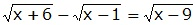
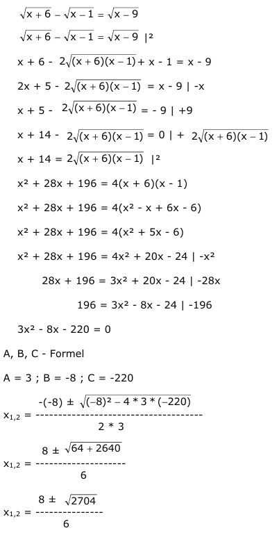

Aufgabe 74 |2 x + 6 - 2 + x - 1 = x - 9 x + 5 - 2 = x - 9 |-x x + 5 - 2 = -9 | +9 x + 14 - 2 = 0 |+2 x + 14 = 2 |2 x2 + 28x + 196 = 4(x + 6)(x - 1) x2 + 28x + 196 = 4(x2 - x + 6x - 6) x2 + 28x + 196 = 4(x2 + 5x - 6) x2 + 28x + 196 = 4x2 + 20x - 24 |-x2 28x + 196 = 3x2 + 20x - 24 |-28x 196 = 3x2 - 8x - 24 |-196 3x2 - 8x - 220 = 0 A, B, C - Formel A = 3 ; B = -8 ; C = -220  8 ± 52 x1,2 = -------- 6 8 + 52 60 x1 = -------- = ---- = 10 6 6 8 - 52 44 22 x2 = -------- = - ---- = - ---- 6 6 3 Probe für x = 10 : 4 - 3 = 1 1 = 1 wahre Aussage, deswegen ist x = 10 eine Lösung der Gleichung. 22 Probe für x = - ----- 3  Alle Ausdrücke unter den Wurzeln sind negativ, deswegen existiert keine Lösung im Bereich der reellen Zahlen.